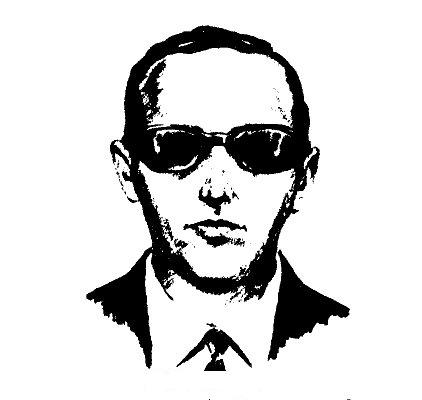
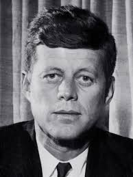

D.B. Cooper
In the early hours of November 24, 1971, a man using the alias “Dan Cooper” hijacked Northwest Orient Airlines Flight 305, a Boeing 727 flying from Portland to Seattle. After extorting $200,000 in ransom, Cooper parachuted from the rear stairway of the plane somewhere over the dense forests of the Pacific Northwest — and vanished without a trace. Despite an extensive FBI investigation that lasted decades, no conclusive evidence has ever revealed Cooper’s true identity or fate. Over the years, tantalizing clues, including a small portion of the ransom money found buried near the Columbia River, have only deepened the mystery. Was he an expert skydiver? Did he survive the jump into the wild wilderness? Or was he a mastermind who planned his escape perfectly? The D.B. Cooper case remains the only unsolved hijacking in U.S. history and has captured the imagination of law enforcement, writers, and conspiracy theorists alike. His daring escape and vanishing act continue to inspire films, books, and countless theories — ensuring the legend of D.B. Cooper endures as one of America’s greatest unsolved mysteries.
The Assasination of JFK
On November 22, 1963, President John F. Kennedy was assassinated in Dallas, Texas, an event that shocked the world and forever altered American history. Officially, the Warren Commission concluded that Lee Harvey Oswald acted alone in firing the fatal shots from the Texas School Book Depository. However, over the decades, countless theories and suspicions have cast doubt on this lone gunman narrative. Speculation about a conspiracy ranges from involvement by the CIA, the Mafia, or even foreign governments, to allegations of a cover-up by the U.S. government itself. Some researchers argue that multiple shooters were involved, citing discrepancies in eyewitness reports and forensic evidence. Others point to the mysterious deaths of key witnesses and the controversial handling of evidence. The JFK assassination conspiracy theories tap into broader questions of trust, power, and secrecy in American politics. Despite numerous investigations and public inquiries, the true story remains elusive, fueling debates and documentaries that keep the mystery alive. For many, uncovering the real truth behind JFK’s death is not just about history—it’s about justice, accountability, and understanding the forces shaping the nation.
The Assasination of MLK
On April 4, 1968, civil rights leader Dr. Martin Luther King Jr. was assassinated in Memphis, Tennessee, an event that devastated the nation and galvanized the fight for racial equality. James Earl Ray was arrested, convicted, and sentenced for the murder, but questions about his guilt have persisted for decades. Many believe that Ray was a convenient scapegoat in a much larger conspiracy involving government agencies and other powerful interests threatened by King’s activism. Investigations and reports suggest that Ray’s confession was coerced and that crucial evidence was suppressed or manipulated. In 1999, the King family publicly declared their belief that James Earl Ray was innocent and had been framed. Conspiracy theories propose that the FBI, under J. Edgar Hoover, and other government entities orchestrated the assassination to silence King, who was seen as a significant threat due to his calls for social justice and opposition to the Vietnam War. Despite the official narrative, the case remains shrouded in controversy, symbolizing the deep mistrust many have toward the institutions involved. The assassination of Dr. King—and the potential framing of James Earl Ray—remains one of the most painful and complex chapters in American history, raising enduring questions about justice, power, and the struggle for civil rights.